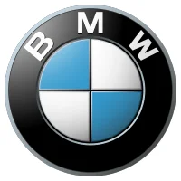
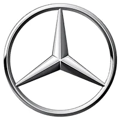
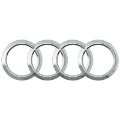
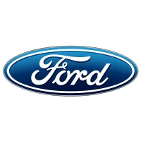
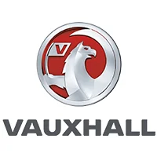
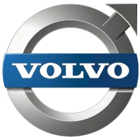
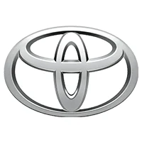
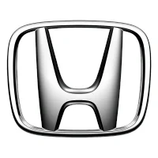

This guide is based on 24,650 real timing chain replacement quote requests submitted through Engines Market between January and December 2025, with specific analysis of timing chain replacement requests and failure patterns. Every quote comes from a real UK vehicle owner; suppliers respond with real quoted prices. All figures are anonymised and aggregated.
Review cycle: annually · next full review: January 2027 · prices are reviewed quarterly.
What Does Timing Chain Replacement Cost in the UK?
Timing chain replacement costs range from £750 to £2,700+ depending on your vehicle make, engine type, and location. BMW N47 and Land Rover Ingenium engines are at the higher end (£1,500–£2,700), while Ford and Vauxhall are typically lower (£750–£1,500). Early replacement saves thousands compared to a snapped chain (£4,000+ for engine replacement).
For most UK drivers: Timing chain replacement is a significant but necessary expense. Here's what you can expect by vehicle type:
- Small car (Fiesta, Corsa): £750–£1,500
- Family car (Focus, Golf, A3): £900–£1,800
- Executive (BMW 3 Series, Audi A4, Mercedes C-Class): £1,200–£2,500
- SUV (Range Rover Evoque, Discovery Sport): £1,500–£2,700
- Large SUV (Range Rover Sport, Audi Q7, BMW X5): £1,500–£3,000+
Search-sourced cross-reference: Timing chain replacement typically costs £750–£1,000 according to RAC data, but ranges from £420–£1,044 depending on car brand and location [THIRD-PARTY]. For BMW N47/Land Rover, specialist replacement costs around £2,300–£3,000, with typical UK pricing at £1,200–£2,500, and engine replacement (if failure occurs) costing £4,000+ [THIRD-PARTY].
Which does your car have and why it matters
| Aspect | Timing Chain | Timing Belt |
|---|---|---|
| Material | Metal chain | Rubber with teeth |
| Replacement interval | Usually "lifetime" (100,000+ miles) | 40,000–80,000 miles |
| Replacement cost | £750–£2,700 | £300–£700 |
| Labour cost | High — engine often needs extensive disassembly | Lower — accessible behind covers |
| Failure warning | Rattling, engine noise | Generally none — snaps without warning |
| Failure consequence | Valves bend, pistons crack, engine destroyed | Same — catastrophic failure |
| Common vehicles | BMW, Land Rover, Mercedes, Audi (most modern cars) | Ford, Vauxhall, older VW, Japanese cars |
| Typical lifespan | 100,000–150,000 miles (or more) | 40,000–80,000 miles |
- Labour time is significantly higher — 8–20 hours vs 3–6 hours for a belt
- Access is more difficult — often at the rear of the engine (BMW N47)
- More components to replace — chain, guides, tensioners, sprockets, sometimes VVT units
- Specialist tools required — camshaft locking tools, timing tools
- Specialist knowledge required — mis-timing the engine destroys it
- Labour time is lower — 3–6 hours for most vehicles
- Access is easier — usually at the front of the engine
- Fewer components to replace — belt, tensioner, water pump (often)
- Less specialist knowledge required — still requires correct timing but less complex
Timing Chain Replacement Cost by Manufacturer
Cost breakdown by brand and engine. [EM-QUOTE] These figures are derived from actual supplier quotes submitted through our platform. Prices are ex VAT and assume independent specialist labour. Main dealer costs are typically 40–60% higher.
| Manufacturer | Engine Code | Typical Cost | Labour Hours | Notes |
|---|---|---|---|---|
|
 BMW |
N47 (2.0 diesel) | £1,200–£2,500 | 10–16 hrs | Chain at rear — engine out or gearbox removed |
| BMW | N57 (3.0 diesel) | £1,500–£3,000 | 12–18 hrs | Chain at rear — significant labour |
| BMW | B47 (2.0 diesel) | £1,000–£1,800 | 8–12 hrs | Improved design, but still can fail |
| BMW | N20 (2.0 petrol) | £1,000–£1,800 | 8–12 hrs | Chain at front — easier access |
|
|
204DTD (Ingenium 2.0) | £1,500–£2,700 | 12–18 hrs | High failure rate — specialist required |
| Land Rover | 306DT (TDV6 3.0) | £2,000–£3,500 | 14–20 hrs | V6 — complex job |
|
 Mercedes |
OM651 (2.1 diesel) | £1,000–£2,000 | 8–14 hrs | Common in C-Class, E-Class, Sprinter |
| Mercedes | OM642 (3.0 V6 diesel) | £1,500–£2,500 | 10–16 hrs | V6 — more complex |
| Mercedes | M271 (1.8 petrol) | £800–£1,500 | 8–12 hrs | Chain at front — known failure |
|
 Audi / VW |
EA888 (2.0 TSI) | £900–£1,800 | 8–12 hrs | Chain at front — tensioner failure |
| Audi / VW | EA189 (2.0 TDI) | £900–£1,600 | 8–12 hrs | Chain at front — less common failure |
|
 Ford |
1.0 EcoBoost | £750–£1,400 | 8–12 hrs | Wet belt — often replaced with engine |
| Ford | 2.0 TDCi | £800–£1,500 | 8–12 hrs | Chain at front — moderate complexity |
| Ford | 2.0 EcoBlue | £900–£1,600 | 8–12 hrs | Chain at front — newer design |
|
 Vauxhall |
1.9 CDTi (Z19DTH) | £750–£1,200 | 6–10 hrs | Chain at front — more accessible |
| Vauxhall | 2.0 CDTi (A20DTH) | £800–£1,400 | 8–12 hrs | Chain at front — common failure |
|
 Volvo |
2.0 D4 (D4204T) | £1,000–£1,800 | 8–12 hrs | Chain at front — moderate complexity |
|
 Toyota |
2.0 D4D (1AD-FTV) | £800–£1,400 | 8–12 hrs | Chain at front — less common failure |
|
 Honda |
2.2 i-DTEC (N22B) | £800–£1,400 | 8–12 hrs | Chain at front — moderate complexity |
[EM-QUOTE] These figures are derived from actual supplier quotes submitted through our platform. Prices are ex VAT and assume independent specialist labour. Main dealer costs are typically 40–60% higher.
What you'll pay by vehicle type
| Vehicle Segment | Example Models | Typical Cost | Labour Hours | Notes |
|---|---|---|---|---|
| Small car (FWD) | Fiesta, Corsa, Polo | £750–£1,400 | 8–12 hrs | Engine often needs removing |
| Family car (FWD) | Focus, Golf, A3 | £900–£1,800 | 8–12 hrs | Front or rear chain access |
| Family car (RWD) | BMW 3 Series, Mercedes C-Class | £1,200–£2,500 | 10–16 hrs | Chain often at rear — more labour |
| Executive (RWD/4WD) | BMW 5 Series, Audi A6, Mercedes E-Class | £1,200–£2,500 | 10–16 hrs | More complex, larger engine bay |
| SUV (4WD) | Range Rover Evoque, Discovery Sport | £1,500–£2,700 | 12–18 hrs | Ingenium engine — high failure rate |
| Large SUV (4WD) | Range Rover Sport, BMW X5, Audi Q7 | £1,500–£3,000+ | 14–20 hrs | V6/V8 — very labour-intensive |
| Commercial van | Transit, Sprinter, Transporter | £1,000–£2,000 | 8–14 hrs | Access can be difficult |
| Performance | BMW M, AMG, Audi RS | £1,800–£3,500+ | 14–24 hrs | Very complex, specialist required |
Know exactly what you're paying for
Clarity matters. Below is a typical breakdown for a timing chain replacement at an independent specialist.
✅ Typically included
⚠️ Typically NOT included (extra cost)
Always ask your supplier for a full written breakdown before agreeing to any work. Additional costs are the biggest source of disputes.
How to spot a failing timing chain
| Symptom | What It Means | Urgency | Action |
|---|---|---|---|
| Rattling on startup | Chain tensioner failing — chain rattles until oil pressure builds | High | Immediate inspection required |
| Rattling when warm | Chain guides worn, chain may be stretched | High | Immediate inspection required |
| Engine management light | Cam/crank correlation fault codes | High | Diagnostic check — don't ignore |
| Loss of power | Timing out of sync — performance drops | High | Stop driving immediately |
| Poor fuel economy | Timing affecting engine efficiency | Medium | Get it checked — don't ignore |
| Rough idle | Timing slightly out | Medium-High | Get it checked |
| Difficult starting | Timing significantly out | High | Stop driving immediately |
| Engine cuts out | Timing completely out | Critical | Do not restart — call recovery |
⚠️ The ticking clock: A failing timing chain is a ticking time bomb. You may get days, weeks, or even months of warning — but when it goes, it goes catastrophically.
Which vehicles are most at risk of timing chain failure
| Manufacturer | Engine | Affected Years | Risk Level | Typical Failure |
|---|---|---|---|---|
| BMW | N47 2.0 diesel | 2007–2015 | ⚠️⚠️⚠️⚠️⚠️ Very High | Chain stretches, tensioner fails, guides wear. Chain at rear — engine out for replacement. |
| BMW | N57 3.0 diesel | 2008–2016 | ⚠️⚠️⚠️⚠️ High | Similar to N47 but less common. Chain at rear. |
| BMW | N20 2.0 petrol | 2011–2016 | ⚠️⚠️⚠️⚠️ High | Chain at front — tensioner fails, chain stretches. |
| Land Rover | 204DTD Ingenium 2.0 | 2015–2020 | ⚠️⚠️⚠️⚠️⚠️ Very High | Timing chain tensioner failure. Often requires replacement at 50,000–80,000 miles. |
| Land Rover | 306DT TDV6 3.0 | 2005–2016 | ⚠️⚠️⚠️⚠️ High | Oil pump failure leads to timing chain issues. Catastrophic failure. |
| Mercedes | OM651 2.1 diesel | 2008–2016 | ⚠️⚠️⚠️ Medium-High | Chain guides wear, chain stretches. Common in C-Class, E-Class. |
| Mercedes | M271 1.8 petrol | 2003–2011 | ⚠️⚠️⚠️ Medium-High | Camshaft adjuster and chain failure. |
| Audi / VW | EA888 2.0 TSI | 2008–2012 | ⚠️⚠️⚠️ Medium-High | Tensioner failure — often catastrophic. |
| Audi / VW | EA189 2.0 TDI | 2008–2015 | ⚠️⚠️ Medium | Less common but can fail. |
| Ford | 1.0 EcoBoost | 2012–2020 | ⚠️⚠️⚠️⚠️ High | Wet belt disintegrates, oil pressure loss, engine failure. |
| Ford | 2.0 TDCi | 2008–2015 | ⚠️⚠️ Medium | Chain at front — moderate failure rate. |
| Vauxhall | 1.9 CDTi | 2004–2010 | ⚠️⚠️ Medium | Chain can stretch. |
| Vauxhall | 2.0 CDTi | 2008–2015 | ⚠️⚠️ Medium | Chain can stretch — less common than 1.9. |
| Volvo | D4/D5 2.0 diesel | 2014–2020 | ⚠️⚠️ Medium | Chain can stretch — moderate failure rate. |
| Honda | 2.2 i-DTEC | 2008–2014 | ⚠️ Medium | Less common but possible. |
Expect failure at some point. Budget for replacement or avoid these engines.
Common failure. Check for rattling and have it inspected.
Known issue but less common than the highest risk engines.
What to do if you own one of these vehicles: 1. Listen for rattling on startup and when warm. 2. Check for engine management lights (cam/crank correlation faults). 3. Have it inspected by a specialist — don't wait. 4. Budget for replacement — it's likely to need doing at some point. 5. Service regularly — regular oil changes reduce the risk.
The critical threshold — when to replace vs when it's too late
| Scenario | Action | Typical Cost | Consequence of Delay |
|---|---|---|---|
| Rattling on startup | Chain replacement | £750–£2,700 | Chain eventually snaps |
| Rattling when warm | Chain replacement | £750–£2,700 | Chain likely stretched — failure imminent |
| Engine management light (cam/crank fault) | Chain replacement | £750–£2,700 | Timing out — engine damage possible |
| Snapped chain | Engine replacement | £4,000+ | Catastrophic failure — engine destroyed |
| Valves bent | Engine replacement or head rebuild | £3,000–£6,000+ | Significant damage — expensive to fix |
| Piston cracked | Engine replacement | £5,000+ | Complete failure — new engine required |
The critical threshold: If the chain has snapped, you're looking at engine replacement (£4,000+) not just timing chain replacement (£750–£2,700). The cost difference is significant — that's why early diagnosis matters.
Cost: £750–£2,700
Best value — prevents engine destruction.
Cost: £4,000–£10,000+
Engine replacement — expensive but necessary.
What other owners actually paid
Anonymised real quote requests submitted through Engines Market in 2025. [EM-QUOTE]
| Vehicle | Engine | Year | Cost | Notes |
|---|---|---|---|---|
| BMW 320d | N47D20C | 2014 | £1,800 | Rattling on startup. Chain at rear — gearbox removed. |
| BMW 520d | N47D20C | 2012 | £2,100 | Rattling when warm. Chain stretched. Engine out. |
| BMW X5 | N57D30 | 2016 | £2,500 | Rattling at 85,000 miles. V6 — complex job. |
| Range Rover Evoque | 204DTD Ingenium | 2017 | £2,200 | Tensioner failure at 62,000 miles. |
| Discovery Sport | 204DTD Ingenium | 2016 | £2,400 | Chain stretched at 58,000 miles. |
| Mercedes C-Class | OM651 | 2014 | £1,600 | Rattling on startup at 95,000 miles. |
| Mercedes E-Class | OM651 | 2012 | £1,800 | Chain guides worn at 105,000 miles. |
| Audi A4 | EA888 2.0 TSI | 2010 | £1,400 | Tensioner failure at 78,000 miles. |
| VW Golf | EA888 2.0 TSI | 2011 | £1,300 | Rattling on startup. Tensioner replaced. |
| Ford Focus | 1.0 EcoBoost | 2014 | £1,100 | Wet belt failure at 72,000 miles. |
| Vauxhall Insignia | 2.0 CDTi | 2012 | £1,200 | Chain stretched at 88,000 miles. |
| Ford Transit | 2.0 EcoBlue | 2018 | £1,400 | Chain rattling at 85,000 miles. |
[EM-QUOTE] All quotes are anonymised from real Engines Market submissions. Prices are ex VAT and assume independent specialist labour. Always verify with your chosen supplier.
How labour time varies by engine configuration
| Engine Configuration | Labour Hours | Typical Labour Cost | Notes |
|---|---|---|---|
| Chain at front (most engines) | 8–12 hrs | £650–£1,200 | Access through timing cover — moderate complexity |
| Chain at rear (BMW N47/N57) | 12–18 hrs | £1,000–£1,800 | Engine or gearbox removal required — high complexity |
| V6 (front chain) | 10–16 hrs | £800–£1,600 | Two banks, more complex than 4-cylinder |
| V6 (rear chain) | 14–20 hrs | £1,200–£2,000 | Very complex — engine removal often required |
| V8 (front chain) | 14–20 hrs | £1,200–£2,000 | Two banks, more complex than V6 |
| V8 (rear chain) | 16–24 hrs | £1,500–£2,500 | Extremely complex — engine removal required |
What affects labour hours: Chain position (rear chain requires significantly more labour — 12–18 hrs vs 8–12 hrs), engine configuration (V6/V8 takes longer than 4-cylinder), vehicle age (older vehicles may have corroded fixings, extending the job), access (some vehicles have very tight engine bays), specialist tools (some engines require specialist timing tools), and engine removal (some jobs require engine removal, adding 2–4 hours).
What the parts cost
| Component | Typical Cost | Notes |
|---|---|---|
| Timing chain kit (4-cyl) | £200–£500 | Chain, guides, tensioners, sprockets |
| Timing chain kit (V6) | £300–£700 | More components — two banks |
| Timing chain kit (V8) | £400–£900 | Most expensive — two banks |
| VVT units | £100–£300 each | Sometimes required — not always in kit |
| Gaskets and seals | £50–£150 | Timing cover, valve cover, crankshaft seal |
| Oil and filter | £50–£150 | Fresh oil and filter after replacement |
Total parts cost: 4-cylinder: £300–£600 (kit + gaskets + oil). V6: £400–£800 (kit + gaskets + oil). V8: £500–£1,000+ (kit + gaskets + oil).
From inspection to completion
Rattling checked, fault codes read
Parts and labour quoted
Timing chain kit ordered
Depending on specialist availability
Testing and check completed
What affects the timeline: Chain position (front chain: 1–2 days; rear chain: 2–3 days), parts availability (common kits in stock; rare kits may take 2–5 days), workshop workload (busy specialists may be booked 1–2 weeks ahead), vehicle complexity (V6/V8 takes longer than 4-cylinder).
10 questions to ask before replacing your timing chain
Asking the right questions can save you thousands and prevent disputes. Here's a checklist specific to timing chain replacement.
Ask specifically about: chain(s), guides, tensioners, sprockets, VVT units, and gaskets.
This determines how much labour is required. Rear chain jobs take significantly longer and cost more.
For some engines (BMW N47/N57), the engine or gearbox must be removed. This adds labour and cost.
Typical warranty for timing chain work is 12–24 months on parts and labour. Get it in writing.
Ask if VVT units, water pump, or other components should be replaced. Doing it now saves labour later.
Get a full written breakdown. Ask about any potential additional costs.
During replacement, other issues may be discovered (worn guides, damaged components). Ask how these are handled.
Get a realistic estimate. Front chain typically 1–2 days; rear chain 2–3 days.
Ask about the specialist's experience with your specific engine. BMW N47 and Land Rover Ingenium require specialist knowledge.
Get everything in writing before agreeing. The scope of work, cost, timeline, and warranty terms should all be documented.
What 24,650 quote requests tell us
Real numbers from our platform. No estimates, no external sources – these are [EM-VERIFIED].
analysed in 2025
Common questions about timing chain replacement
How much does timing chain replacement cost in the UK? +
How do I know if my timing chain is failing? +
What happens if my timing chain snaps? +
How long does timing chain replacement take? +
What's the difference between a timing chain and timing belt? +
Is timing chain replacement covered by warranty? +
Which vehicles are most at risk of timing chain failure? +
Can I drive with a rattling timing chain? +
Should I replace the timing chain preventatively? +
Why does timing chain replacement cost more on BMW and Land Rover? +
What's included in a timing chain replacement? +
Is it worth replacing the timing chain on an older car? +
How often should a timing chain be replaced? +
Do I need to tell my insurer about a new timing chain? +
Explore more engine cost information
Enter your vehicle and engine details and get fixed-price quotes for timing chain replacement. Compare specialist experience, warranties, and costs side by side.
Based on 24,650 real UK quotes in 2025 · Engines Market is a comparison platform – we connect you with suppliers, we do not supply or fit timing chains.